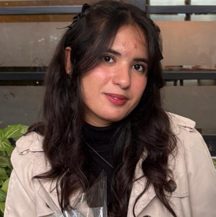

Wearable Upper-Limb Exoskeleton for Biomechanical Motion Assistance
Final year project. Designing a wearable exoskeleton for upper-limb motion assistance, focused on joint actuation and ergonomic alignment.
Biomedical Engineering · UET Lahore
Biomedical Engineering Student
I'm a biomedical engineering student interested in signal processing, wearable sensors, and building tools that make medical data easier to understand and act on. This site is a collection of my projects, research, and experience so far.

I'm a Biomedical Engineering student at the University of Engineering and Technology, Lahore, with a research focus on physiological signal acquisition and the algorithms that turn raw sensor data into clinically useful information.
My work spans hardware and software: wiring up ECG, PPG, EMG, IMU and spirometry sensors on platforms like NI ELVIS, iWorx and Shimmer, then writing the MATLAB and Python pipelines that clean, analyze and classify what they capture. Recent projects include an adaptive ECG arrhythmia detector, a wearable rehabilitation sensing study run with Mayo Hospital, and a vision-controlled prosthetic hand.
Outside the lab, I lead student organizations — from a debating society to a STEM outreach initiative for girls — because I think engineering only matters if the people around you can access it too.
Selected academic and independent work.
Real-time acquisition, filtering and analysis of ECG, PPG, spirometry and EMG signals at sampling rates up to 1,000 Hz, built on NI ELVIS II+ hardware with iWorx sensors and a MATLAB / NI-DAQmx processing pipeline.
Final year project. Designing a wearable exoskeleton for upper-limb motion assistance, focused on joint actuation and ergonomic alignment.
Real-time, vision-controlled prosthetic hand achieving 94% gesture accuracy with under 150 ms latency.
Modeled ultrasound propagation, acoustic fields, RF signals and image reconstruction for biomedical imaging.
Problem-based learning project. Wearable cardiovascular monitoring architecture integrating arterial pressure and single-lead ECG acquisition.
Analyzed muscle forces, external loading, moment arms and joint torque during simulated flexion–extension.
Review article. Co-authored a review of CRISPR-Cas9 oncogene silencing, immune enhancement and blood-brain-barrier delivery strategies for glioblastoma therapy.
Acquired and filtered surface EMG signals to isolate muscle activation patterns for physiological analysis.
C7–T1 IMU-based posture monitoring detecting spinal deviation beyond 30° sustained for 5 seconds, with corrective feedback.
Leading inter-university literary and debating competitions with 300+ registrations and 20+ participating institutions across Pakistan.
Co-founded a STEM education initiative delivering hands-on learning to underprivileged students, with a focus on empowering young girls to pursue engineering.
Selected from 10,000+ candidates and the first woman to hold the position in UET's history; the event ranked among the Top 3 entrepreneurial events nationally.
Coordinated Punjab's largest MedCon with 1,500+ participants, represented the organization across 10+ initiatives, and led flood-relief fundraising campaigns.
Open to research collaborations, internships and roles in biomedical signal processing, wearable sensing, or rehabilitation technology.